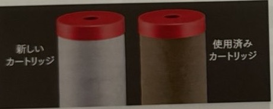
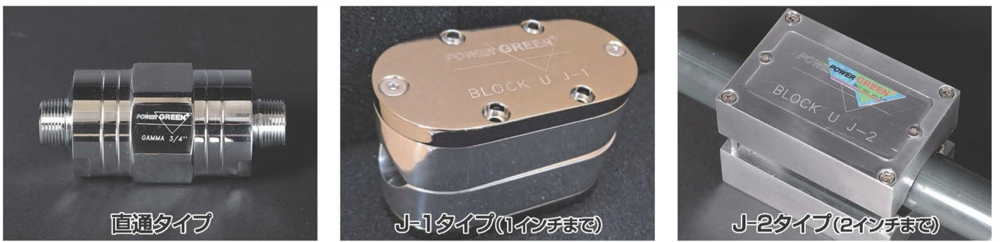

PRODUCTS
取扱商品
水が変わった生活を、体験してみませんか。
AWP
水が変わった生活を、体験してみませんか。
AWPは、ヤシガラ活性炭のカーボンフィルターを搭載した、ステンレス製(SUS304)の家庭用浄水設備です。毎日使う水を、より安心でおいしい水へ。
AWPについて問い合わせる鉛除去機能搭載
本体材質:ステンレス鋼
※カートリッジは保証対象外
水道水に含まれる、気になる成分
毎日使う水だからこそ、知っておきたいポイントです。
塩素
殺菌に欠かせない一方で、肌や髪への負担も
水道水の塩素処理の本来の目的は、赤痢やコレラなどの病原菌を殺菌することです。一方で、塩素にはたんぱく質を破壊する作用があるため、洗顔・シャワー・入浴の際に、肌や髪への負担になることがあると言われています。
カルキ
水を使う製品にも影響することが
カルキは金属製品を腐食させる可能性があり、加湿器・炊飯器・湯沸かし器・洗濯機など、水を使う製品にも影響を与えることがあります。製品の寿命を縮める原因にもなるため、取り除くための対策が必要です。
トリハロメタン
水道水を加熱すると増えるとされる物質
水道水中に含まれ、発がん性や流産の危険性が指摘されている物質です。お茶を入れる、ご飯を炊く、お風呂を沸かすなど、水道水を加熱した際に、より高濃度のトリハロメタンが生成されるとされています。揮発性があるため、バスルームでは気化したものを吸い込むおそれもあります。
高い吸着能力と、目詰まりしにくさを両立
新開発の「ヤシガラ活性炭」カーボンフィルターを搭載しています。
吸着性能
独自技術で開発・配合した活性炭で、様々な微粒子の吸着性能を実現
主にヤシガラ炭を原料とし、製造時に微細孔径・細孔容積を調整。様々な大きさの微粒子を吸着できるよう改良し、高い浄水性能と目詰まりしにくさを両立しました。
通水性能
毎分20リットルの通水性能を継続的に発揮
目詰まりしにくい特性により、毎分20リットル以上の通水性能を継続的に発揮します。
ろ過能力試験を実施している項目
- 遊離残留塩素
- 溶解性鉛
- CAT(シマジン)
- 総トリハロメタン
- 2-MIB(カビ臭)
毎日の暮らしと、水まわりの設備を守る
水まわりの設備機器全般の保護にも
水道水は、浄水場から長い距離を経て家庭へ届けられます。水道管は鉄でできていることが多く、塩素などで酸化した水道管が鉄サビとなり、水道水に含まれることがあります。
- 本管の腐食により、サビやゴミなどの不純物が混入
- 塩素の酸化作用で腐食が進行
- 目に見えない赤水・サビなどが設備機器に混入
- 設備機器にダメージの可能性
不純物が混入した水道水を浄水し、赤サビなどから設備機器を守ります。
- エコキュート
- 太陽熱温水器
- 石油・ガス給湯器
※設備機器の使用年数や水質状況等により保護効果は変動します。設備機器の保護を保証するものではありません。
天然水に近い「おいしい水」
良質なミネラルをバランスよく含み、天然水に近いORP(酸化還元電位)に。まろやかでおいしい水になります。飲み物はもちろん、炊飯などのお料理にも。
ORPの比較 ※数値が低いほど還元力が強い ※平成14年8月検査(東京都墨田区水道水)
水の力を高める「界面活性力」
水を活性化し、溶解力・浸透力・浄化力(界面活性力)を高めます。水が本来持つ力を引き出した水です。
溶解力(界面活性力)の比較 ※平成14年8月検査(東京都墨田区水道水)
食洗機・加湿器も安心して使える家庭向け設計
塩素カットの割合を80%〜100%の間で調整できます。従来の浄水設備で問題視されていた食洗機や加湿器も、安心してお使いいただけます。初期設定は80%です。
製品仕様
※掲載内容はカタログ記載の情報に基づいています。仕様・価格は変更される場合があります。
本体仕様
| 品名(型式) | AWP |
|---|---|
| 本体材質 | (本体)SUS304製 (カートリッジ)PE/PP芯サヤ繊維・ABS樹脂・ホットメルト |
| ろ材の種類 | やし殻活性炭・銀添着活性炭・鉛吸着材・バインダー繊維 |
| ろ過流量 | 20L/分(JIS S 3201での試験結果) |
| 使用可能な最小動水圧 | 0.01MPa以下(JIS S 3201での試験結果) |
| 適正使用水圧 | 0.25MPa〜0.7MPa |
| 浄水能力 | 遊離残留塩素(ろ過能力150,000L)JIS-S3201 除去率80% 0.5mg/L、除去率80%の場合のろ過能力600,000L |
| 配管口径 | 20A(ネジ部G3/4) ※取付け可能配管口径13mm〜20mm |
| サイズ | W157×D157×H375 |
| 重量 | 約3.5kg ※通水前の状態 |
カートリッジ仕様
| 型式 | AWP |
|---|---|
| カートリッジ交換 | 550L/日 約3年 ※水質状況等により変動します。(但し、原水の残留塩素濃度が0.5mg/L以下の場合) |
| 寸法・重量 | 直径89mm×高さ253mm(約460g) ※通水前の状態 |

ご使用のカートリッジ交換時期等についての注意点
- 水質等の条件により、期間内でもカートリッジに目詰まりは発生し、使用水量が減る場合があります。十分な水量が得られない場合はカートリッジの交換を行ってください。
- 装着から1年半未満でフィルターの交換が必要になった場合は、標準価格の半額(税込16,500円)にてご提供いたします。
- 定期的なカートリッジの交換を行わないと、カートリッジが破損する場合がありますので、必ず定期的なカートリッジの交換を行ってください。
安心の品質・安全性
厚生労働省の定める「水道法」、経済産業省の定める「家庭用浄水器」の試験に準拠した製品です。
試験機関:(一社)日本食品分析センター(2015年・2018年実施)。「ろ過流量試験」「最小動水圧試験」も行っています。
ISO認証取得工場で製造
国際規格である品質マネジメントシステムISO 9001の認証を取得した工場で、安心の製造体制を継続して実行しています。
PL保険(生産物賠償保険)加入商品
製品の安全性には万全を期していますが、万一の事故時にはこのPL保険により迅速な対応が可能です。
安心の長期保証
本体には長期保証が付いています(※カートリッジは保証対象外)。保証内容の詳細はお問い合わせください。
ご使用上の注意
- 本製品は水道水や井戸水など、水道法に適合した水質専用に開発したものです。その他の水質には絶対に使用しないでください。
- 海水の淡水化はできません。水に溶けている塩分の除去や、硬水を軟水に変えることはできません。
- 設置場所の水質や水圧の条件により、水量が低下する場合があります。適正使用水圧内でのご使用をおすすめします。
- 朝一番の使用時には、装置内に留まっていた水を排出するため、約10秒間水を流してください。
- 一週間以上使用を止めていた場合は、1分以上水を流してください。浄水した水は衛生安全のため、できるだけ早くご使用ください。
- 冬期に氷点下になる寒冷地では、凍結防止のための追加工事をおすすめしています。凍結防止帯(電気ヒーター)などのオプション備品代金、それに伴う工事費用が別途必要です。
GAMMA
いい水でくらそう。
パワーグリーン ガンマは、イタリア製の磁気イオン加速活水器です。15,000ガウスの高性能ネオジウム磁力で、水道水を磁気処理水へ。水道メーターの後(集合住宅では受水槽の後)に取り付けることで、洗面・浴室・洗濯など、暮らしの水まわりに磁気イオン水をお届けします。
GAMMAについて問い合わせるネオジウム磁力
MADE IN ITALY
この磁気イオン水が、暮らしを変える
天然鉱石ネオジウムの働きで、水道水を「磁気イオン水」に。水管や給湯器の保護にもなる、人と家にやさしい商品です。
お風呂
お湯がやわらかく、保温効果も
湯冷めしにくい・泡立ちが良く汚れが落ちる・肌にやさしい。カビの軽減にもつながります。
洗面・美容・洗髪
お肌しっとり、やさしい使い心地
洗顔や手洗いで、肌にやさしい使い心地。水まわりは汚れにくくなります。
トイレ
ヌメリ・汚れが、容易に洗浄
汚れ、黄ばみが付きにくく、お掃除の回数が減ります。配管トラブルの軽減にも。
キッチン
水も料理もおいしく
水や料理がおいしく、食器洗いにも最適。排水口の匂いやヌメリの防止にもつながります。
洗濯
洗浄力がアップ
洗剤と水を減らすことができ、きれいに洗えて、やわらかく洗いあがります。洗濯槽裏のカビも付きにくくなります。
飲料・お料理
お米がふっくら
お米はふっくら、お茶やコーヒー、水割りもイオン水で。浄水器との併用もできます。
そのほかの活用シーン
- 植物の水やり
- 洗車
- 観賞用水槽
- 温水器や水管の保護
- 排水・配水管のクリーン化
※効果の感じ方には個人差があります。掲載内容はカタログ記載の情報に基づいています。
洗浄力テストで確認された、洗浄率の違い
水道水に比べ、磁気イオン水の洗浄率が高い結果が出ました。洗濯・お風呂・食器類の洗浄・洗車などで役立ちます。
※テスト機関:大阪府立産業技術総合研究所。サーモグラフでのテストでも、入浴後の保温に効果的という結果が出ています。
取り付け場所とラインアップ
ご家庭では
水道メーターの後に
水道メーターの後にGAMMAを取り付けることで、洗面・浴室・洗濯など、暮らしの水まわりが磁気イオン水に変わります。
集合住宅・マンション等では
受水槽の後に
受水槽の後に取り付けることで、給・配水管のメンテナンスがより経済的になります。

| 商品 | L×W(mm) | H(mm) | 重量(kg) | 接続 |
|---|---|---|---|---|
| ガンマ20A(25A/50A) | 67×60 | 133 | 1.6 | R3/4 R1 |
| ブロックJ1 | 95×49 | 72 | 1.0 | 挟み込みタイプ |
| ブロックJ2 | 120×79 | 73 | 2.1 | 挟み込みタイプ |
| フランジタイプ | 50〜500A(2〜20インチ) | フランジ | ||
※掲載内容はカタログ記載の情報に基づいています。仕様は変更される場合があります。